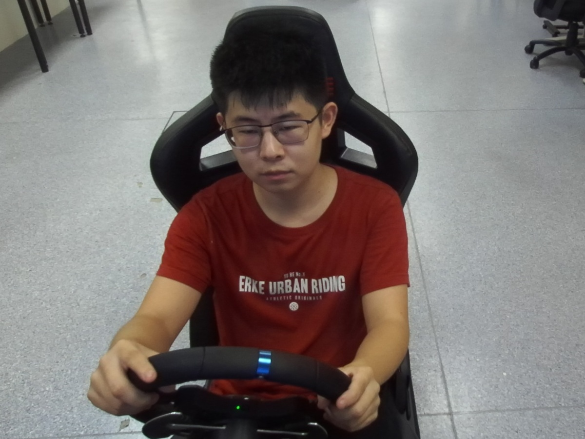
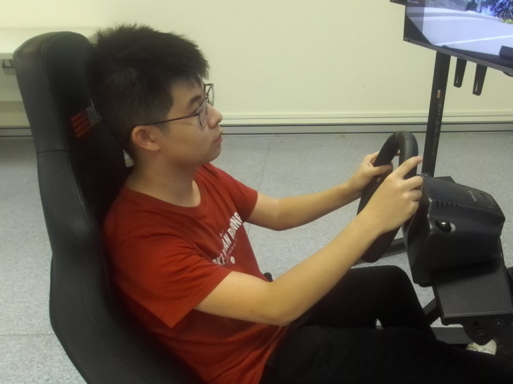
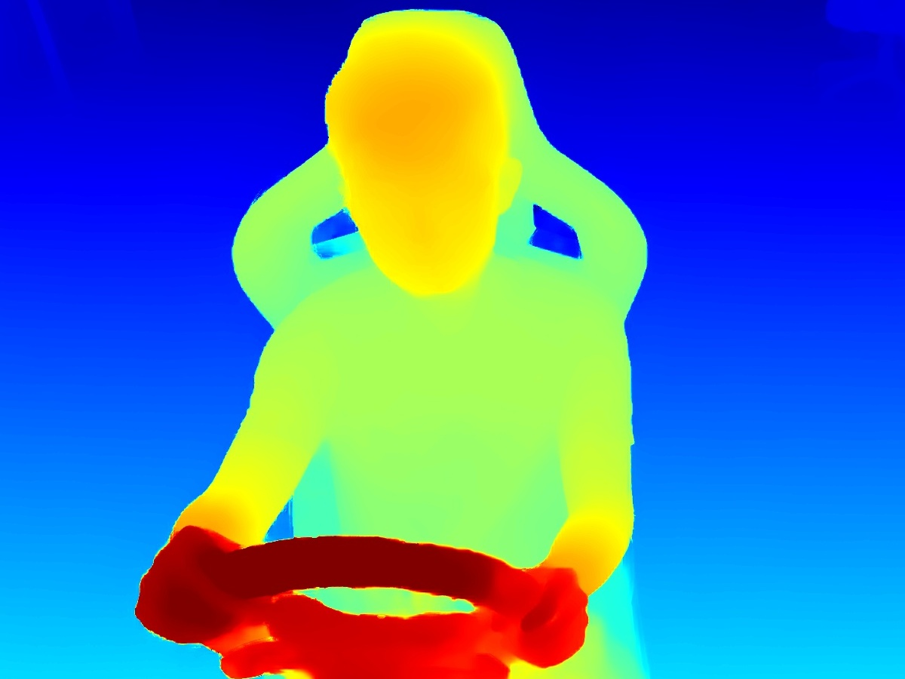
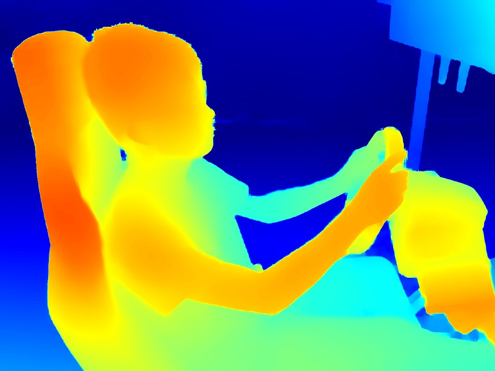
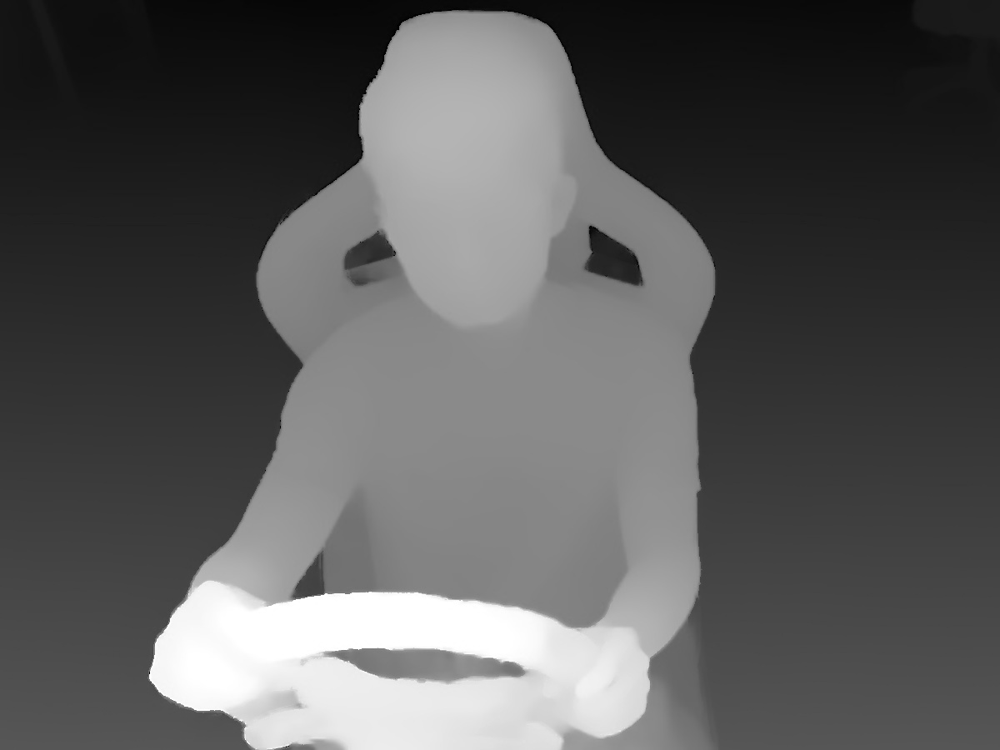
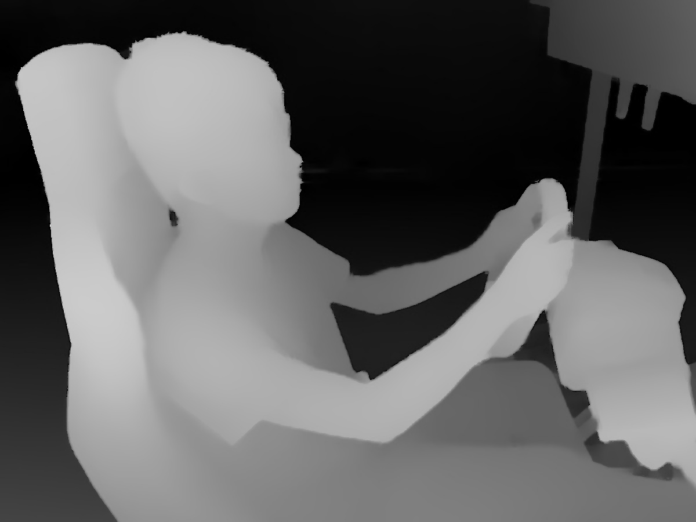

Datasets
| |
SAM-DD |
| Features |
- The SAM-DD dataset contains high-quality multi-modal information, i.e., RGB and depth, which can improve the model’s reliability against various driving environments.
- The SAM-DD dataset is mainly for intelligent driving research in the laboratory, including driving takeover systems, remote driving, and control strategies involving driver states, etc.
- SAM-DD dataset is large enough for training learning-based models from scratch. Also, researchers can conveniently migrate the trained model to targeted downstream tasks.
|
| Illustration |
 |
 |
 |
 |
 |
 |
| Download link |
| Citation |
- H. Yang, H. Liu, Z. Hu, A.T. Nguyen, T.M. Guerra, and C. Lv, "Quantitative Identification of Driver Distraction: A Weakly Supervised Contrastive Learning Approach," IEEE Trans. Intell. Transp. Syst., vol. 25, no. 2, pp. 2034-2045, Feb. 2024.
|
Selected Publications
A series of studies have been carried out based on SAM-DD, representative ones are listed below,
&bull M. Z. Hasan, et al., "Vision-language models can identify distracted driver behavior from naturalistic videos," arxiv, 2024.
|
Vision-Language Model(CLIP), Few-Shot Transfer
|
Institutions
Our work is being used by researchers across academia and research labs in 3 countries and 5 institutions:
Terms & Conditions
- The dataset is the sole property of the AutoMan group at the Nanyang Technological University and is protected by copyright. The dataset shall remain the exclusive property of AutoMan.
- The End User acquires no ownership, rights, or title of any kind in all or parts regarding the dataset.
- Any commercial use of the dataset is strictly prohibited. Commercial use includes, but is not limited to: testing commercial systems; using screenshots of subjects from the dataset in advertisements, selling data or making any commercial use of the dataset, broadcasting data from the dataset.
- The End User shall not, without prior authorization of the AutoMan group, transfer in any way, permanently or temporarily, distribute or broadcast all or part of the dataset to third parties.
- The End User shall send all requests for the distribution of the dataset to the AutoMan group.
- All publications that report on research that uses the dataset should cite our publications.